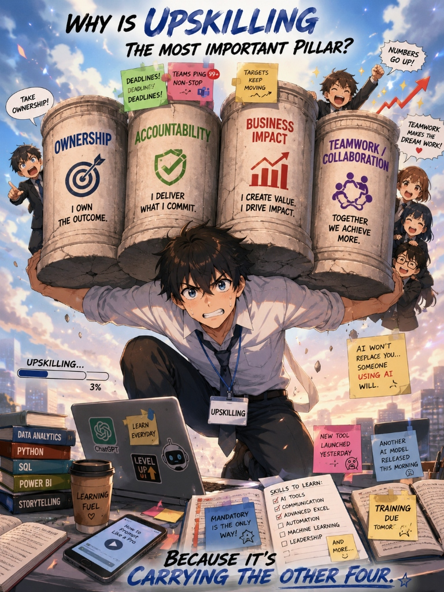

Ownership, accountability, teamwork, and business impact are timeless values. Upskilling is what keeps those values effective in a changing world.
As the workplace evolves under AI, automation, and shifting dynamics, classic corporate virtues crumble without continuous learning. Here is why upskilling carries the other four.

“Modern ownership is not just completing tasks. It’s adapting fast enough to continue delivering value.”
You can't take ownership if your skills become outdated. If tools change, markets shift, and workflows evolve, ownership means learning continuously.
“In today’s world, refusing to learn eventually becomes a business risk.”
Refusing to adapt makes someone slower and dependent on others. Eventually, accountability weakens because results decline.
"But I've done it this way for 10 years!"
"Let me automate that workflow in 5 minutes."
Technology compounds the impact of skilled people. A single upskilled employee combining AI + Analytics + Communication can outperform entire traditional workflows.
Drag to add skills & AI tools to your workflow
“A team grows only as fast as its willingness to learn together.”
Modern collaboration is sharing knowledge, teaching tools, and adapting together. Teams fail when knowledge is siloed and only a few people adapt.
"For humans, upskilling is less about 'learning more' and more about **reducing future fragility**. Someone who continuously learns becomes adaptable instead of replaceable."
Initializing AI assistant conversation logs...
Status: Connected to Gemini 3.5
guest@offsite:~$ ./ask_ai_about_upskilling.sh
Click one of the queries below to ask the AI model its perspective on upskilling.
Faced with the Hulkbuster of AI automation, shifting markets, and changing toolsets: how do you react?
Choose your strategy below to see if traditional brute force or modern upskilling wins the battle.